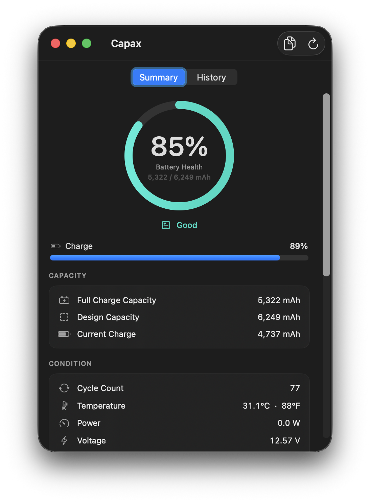
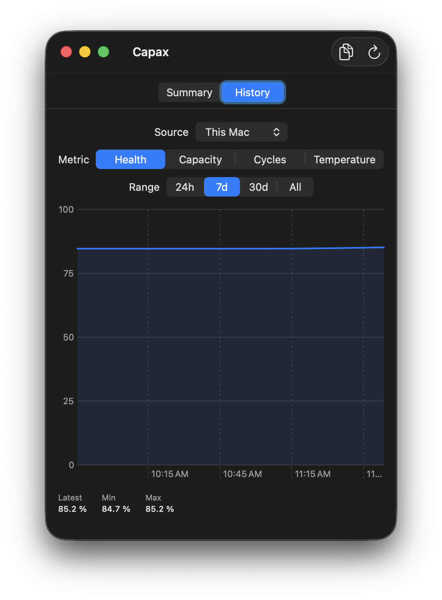

A native macOS battery monitor for your Mac and your iPhone & iPad. Minimal, glanceable, completely offline.
macOS 15.5+ · Free and open source · No account, no telemetry

One hero metric: battery health, full-charge against design capacity, in a custom gauge. Below it, your charge level and the details that matter, cycle count, temperature, power, voltage, and the adapter. Honest labels, no clutter.
Capax logs samples locally and charts the trend. Switch between health, capacity, cycles, and temperature across 24 hours, 7 days, 30 days, or all time, with latest, min, and max at a glance. Everything stays on your device.

Battery health, full-charge vs design capacity, cycle count, temperature, power, voltage, and the power adapter, all in one clean view.
Plug in over USB to read the real battery health, cycle count, and capacity Apple hides. The tools are bundled in, so there's zero setup.
Capax quietly logs samples and charts health, capacity, cycles, and temperature over time, all stored on your device.
Charge % and watts at a glance, with a popover summary. Open the full window only when you want the details.
Capax reads straight from the hardware and shows true values. It never fakes or "repairs" a health figure. It is a read-only monitor: it changes nothing, sends nothing, and works fully offline.
Download the latest Capax.dmg from Releases, open it, and drag Capax to Applications.
First launch. Because it is an open-source unsigned build, right-click the app and choose Open, or run the command below.
For an iPhone or iPad, connect it over USB, unlock it, and tap Trust. Its battery card appears automatically.